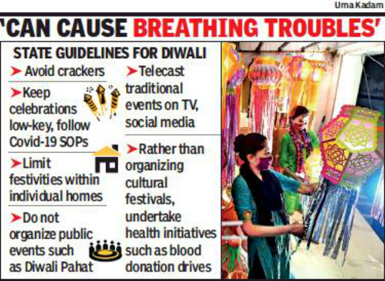

below are the do's and dont's for an eco-friendly diwali.
DO'S
- Distribute sweets amongst your neighbours, friends, and family.
- distribute food, clothes, sweets, and some money to poor people.
- Spend time with your family playing games, or talking to each other, instead of staying online.
- Video call your friends or relatives who live very far away.
- You can also donate blood. This will be more helpful, mostly during this pandemic.
DONT'S
- Do not, and do not burst crackers. These have harmful toxins that will make you
ill, directly
or indirectly.
- Do not go to any grand party for diwali, as there is a lot of food wasted.
- Do not cut trees indirectly. Instead plant a tree.
- Do not launch flying lanterns in the sky, as it can disrupt an airplane, or hit a bird.

GO BACK TO MAIN PAGE